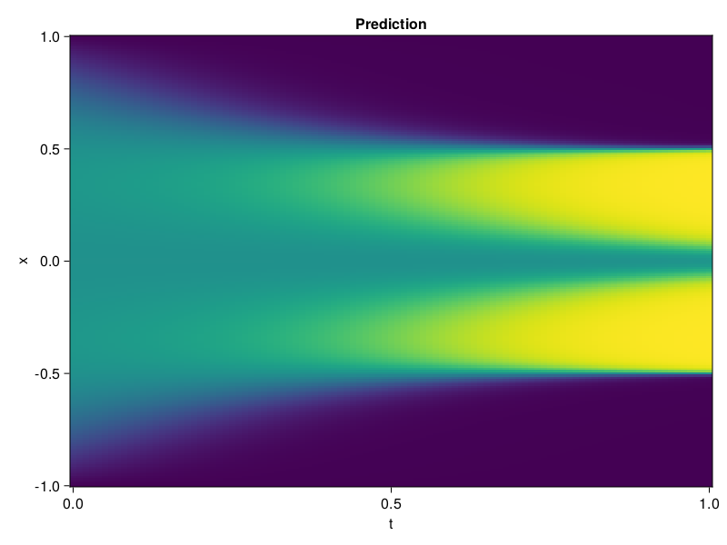

Allen-Cahn Equation with Sequential Training
In this tutorial we are going to solve the Allen-Cahn equation with periodic boundary condition from $t=0$ to $t=1$. The traning process is split into four stages, namely $t\in [0,0.25]$, $t\in [0.0,0.5]$, $t\in [0.0,0.75]$ and $t\in [0.0, 1.0]$.
using ModelingToolkit, IntervalSets
using Sophon
using Optimization, OptimizationOptimJL
@parameters t, x
@variables u(..)
Dₓ = Differential(x)
Dₓ² = Differential(x)^2
Dₜ = Differential(t)
eq = Dₜ(u(x, t)) - 0.0001 * Dₓ²(u(x, t)) + 5 * u(x,t) * (abs2(u(x,t)) - 1.0) ~ 0.0
domain = [x ∈ -1.0..1.0, t ∈ 0.0..0.25]
bcs = [u(x,0) ~ x^2 * cospi(x),
u(-1,t) ~ u(1,t)]
@named allen = PDESystem(eq, bcs, domain, [x, t], [u(x, t)])\[ \begin{align} - 0.0001 \frac{\mathrm{d}}{\mathrm{d}x} \frac{\mathrm{d}}{\mathrm{d}x} u\left( x, t \right) + 5 \left( -1 + \left|u\left( x, t \right)\right|^{2} \right) u\left( x, t \right) + \frac{\mathrm{d}}{\mathrm{d}t} u\left( x, t \right) =& 0 \end{align} \]
Then we define the neural net, the sampler, and the training strategy.
chain = FullyConnected(2, 1, tanh; hidden_dims=16, num_layers=4)
pinn = PINN(chain)
sampler = QuasiRandomSampler(500, (300, 100))
strategy = NonAdaptiveTraining(1, (50, 1))
prob = Sophon.discretize(allen, pinn, sampler, strategy)OptimizationProblem. In-place: true
u0: ComponentVector{Float64}(layer_1 = (weight = [1.4018627405166626 -1.4766849279403687; 1.6374402046203613 -0.48189684748649597; … ; 0.17466801404953003 0.8166065216064453; 0.3550037741661072 1.2453001737594604], bias = [0.0; 0.0; … ; 0.0; 0.0;;]), layer_2 = (weight = [-0.1783163994550705 0.4139215350151062 … -0.38204988837242126 -0.05983853340148926; -0.465088814496994 -0.5075300931930542 … 0.16827622056007385 -0.2964230477809906; … ; 0.6000338792800903 0.45827794075012207 … 0.1780553013086319 -0.34248605370521545; 0.6355932950973511 0.06732141226530075 … 0.35643330216407776 0.5720176696777344], bias = [0.0; 0.0; … ; 0.0; 0.0;;]), layer_3 = (weight = [-0.15614856779575348 0.1611194908618927 … 0.6808239221572876 0.3766939043998718; 0.5844935178756714 0.22910988330841064 … -0.5248843431472778 0.2198771983385086; … ; 0.027152955532073975 0.6843961477279663 … 0.42975252866744995 -0.4264327883720398; -0.04357885196805 -0.23950296640396118 … -0.07995201647281647 -0.2746940553188324], bias = [0.0; 0.0; … ; 0.0; 0.0;;]), layer_4 = (weight = [-0.2338128238916397 -0.32887881994247437 … 0.03572052717208862 0.16250158846378326; 0.29872825741767883 0.36330321431159973 … -0.5503695607185364 0.46251964569091797; … ; -0.3621014356613159 0.25634267926216125 … 0.31747540831565857 -0.6073237061500549; -0.5211347341537476 -0.41722455620765686 … 0.30701252818107605 -0.46022680401802063], bias = [0.0; 0.0; … ; 0.0; 0.0;;]), layer_5 = (weight = [-0.27099958062171936 0.43568432331085205 … -0.6209160685539246 0.24926449358463287], bias = [0.0;;]))We solve the equation sequentially in time.
function train(allen, prob, sampler, strategy)
bfgs = BFGS()
res = Optimization.solve(prob, bfgs; maxiters=2000)
for tmax in [0.5, 0.75, 1.0]
allen.domain[2] = t ∈ 0.0..tmax
data = Sophon.sample(allen, sampler)
prob = remake(prob; u0=res.u, p=data)
res = Optimization.solve(prob, bfgs; maxiters=2000)
end
return res
end
res = train(allen, prob, sampler, strategy)u: ComponentVector{Float64}(layer_1 = (weight = [2.1319218236174406 -1.5648197198980103; 1.287826768926144 -0.4052391716927038; … ; -0.019788634153138043 0.6250358249051323; 0.3622158126729494 1.2896446306183353], bias = [0.6165862714292507; 1.1290316180698112; … ; 0.18614707104324335; 0.3678156886516289;;]), layer_2 = (weight = [-0.2257567463521491 0.3772474418624083 … -0.49640944413869764 -0.19200001616747833; -0.6428100256839971 -0.6335479020818428 … 0.1687194978829338 -0.39424802253239855; … ; 0.13320202214314514 0.10557345724505662 … 0.16975803995038377 -0.2907491305675731; 0.5731200620203951 0.058338480595636635 … 0.5325771612101267 0.7136156365756174], bias = [-0.1253180362591013; -0.2294873946362439; … ; 0.15372687843886243; -0.27040161866605505;;]), layer_3 = (weight = [0.07060213971307748 0.17787682793362122 … 0.7569283815844354 0.7530822719025365; 0.19961804670448177 1.4275295641360308 … -0.8267238329060789 0.3684029755505319; … ; -0.01669044654422527 0.8295220764295436 … 0.04394250903560427 -0.3398317564497469; -0.13327034221411624 -0.5880672790658997 … 0.2624980768551757 -0.45444448801646936], bias = [0.41628340294302496; -0.03887387567828458; … ; -0.24849725319602503; 0.37402323288121053;;]), layer_4 = (weight = [-0.31085107370963766 -1.18236216741255 … 0.01330372783719877 0.14863922374127042; 0.30540667123953064 0.4843368493362786 … -0.5028490244114809 1.057464477839501; … ; -0.5729163056688604 0.2685800693723433 … 0.7675367556837004 -0.5042292443895866; -0.6057464974536797 -0.3212560262649137 … 0.36844930253916486 -0.485102696619221], bias = [0.04416643257067711; 0.3748916222909541; … ; -0.10301188476350562; -0.06438312859207211;;]), layer_5 = (weight = [-1.0045281642815564 0.8510600690246407 … -1.1516814236469088 0.6950059746389512], bias = [-0.36317472378757026;;]))Let's plot the result.
using CairoMakie
phi = pinn.phi
xs, ts = [infimum(d.domain):0.01:supremum(d.domain) for d in allen.domain]
axis = (xlabel="t", ylabel="x", title="Prediction")
u_pred = [sum(pinn.phi([x, t], res.u)) for x in xs, t in ts]
fig, ax, hm = heatmap(ts, xs, u_pred', axis=axis)